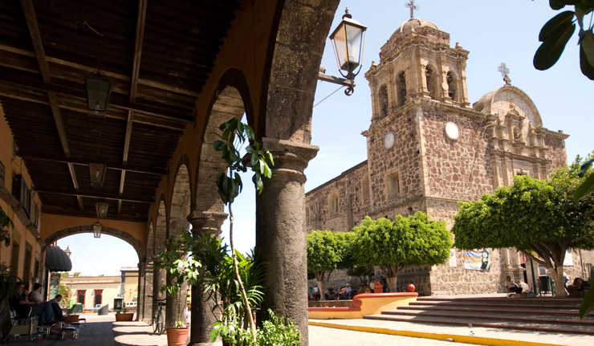

TEQUILA JALISCO
Su nombre viene de la voz náhuatl “Tecuilan” que significa “lugar de tributos”. Tequila guarda celosamente algunas de sus más antiguas tradiciones, como la típica bendición de las nueve de la noche, cuando el cura del lugar bendice a los habitantes al tocar las campanas en tres ocasiones. El pueblo se detiene en ese momento, los lugareños se ponen de pie y dirigen su mirada hacia la iglesia.

TEMPLO DE TEQUILA
Templo La Purísima, Parroquia dedicada a Santo Santiago Apóstol de Tequila Jalisco, patrono de los pueblos de la región es mejor conocida como el Templo de la Purísima. Construida en el siglo XVII y cuya belleza reside en la sencillez del edificio.
LETRAS DE TEQUILA
Las letras de Tequila son una atracción Turística muy buscada que la caracteriza de ser un Pueblo Mágico. Y muchos dicen que si no hay foto no cuenta.
CARACTERÍSTICAS
De orígenes chichimecas, otomíes, toltecas y nahuatlacas quienes antes
de la conquista ya degustaban los jugos del agave, hasta que en 1530
llegaron los españoles. La primera destilería se establece en 1600,
pero es hasta fines del XVIII que surge como industria. Esta tierra
del oro azul se levanta a las faldas del volcán de Tequila y el cañón
del Río Grande, entre paisajes de cultivos de agave, antiguas
haciendas y destilerías que fabrican la deliciosa bebida distintiva de
México.
Está ubicado a 1,700 m y de clima semiárido y subtropical, donde buena
parte del año es seco y templado, con una temperatura promedio de 23 º
C. Además del agaves se cultivan ciruelas, mango y plátano.
En la cocina local es típica la birria, que muchos locales pasan con
tejuinos y tequilas solos o en coctel; ya como cena son típicas las
tostadas y pozole.
En el programa Pueblos Mágicos desde 2003.
ATRACTIVOS
Capilla El Calvario
Cascada Los Azules
El Arenal
Hacienda y destilería José Cuervo La Rojeña
Las Destilerías
Los lavaderos
Mundo Cuervo
Museo Los Abuelos
Museo Nacional del Tequila
Palacio Municipal
Parroquia de Santiago Apóstol
Quinta Sauza
Santuario de la Santa Cruz
Templo de la Purísima Concepción
Tren Tequila Express o el José Cuervo Express
Tour de Antros, Bares y Tabernas
Volcán de Tequila
FESTIVIDADES
1.- Semana Cultural, 1 a 15 abril.
2.-Día de la Santa Cruz, 3 mayo. Peregrinaciones al Santuario, con
danzas y fuegos artificiales
3.-“Los cantaritos”, el 24 y 29 junio. Se arrojan en el campo figuras
de barro en forma de cántaros.
4.- Feria Nacional del Tequila, noviembre y diciembre. Coincide con
las fiestas patronales.
UBICACIÓN
CONTACTO
Para más información puedes contactarnos sin ningún costo Contacto!